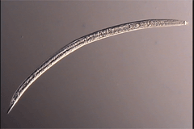
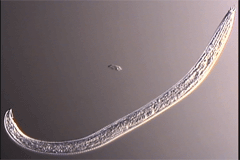

Acrobeles emmatus
Virtual specimen prepared by Melissa Yoder, Irma T. De Ley and Paul De Ley
Click on the appropriate thumbnail image to select the relevant specimen.

Adult Female

Adult Male
copyright 2002